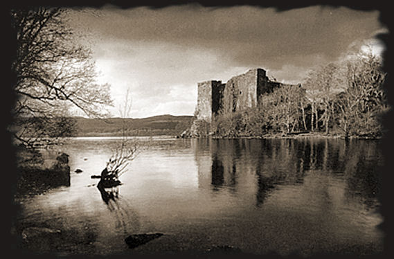
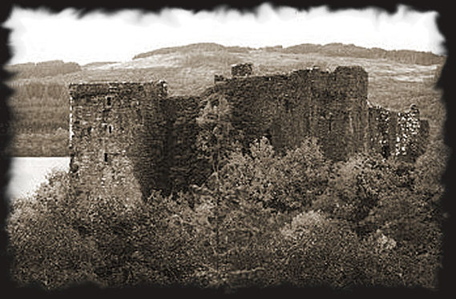
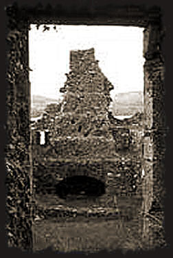
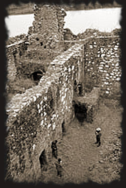

The MacDougalls or the Campbells – which clan built Innis Chonnel Castle?
According to the Royal Commission on Ancient Monuments, the Castle’s history is relatively unknown, but it was certainly built by a founding member of the Clan Campbell. Sadly, little is known about the origins of this clan before the arrival of Sir Colin (Mor) Campbell, at the end of the 13th century. Innis Chonnel is only mentioned for the first time in October 1308, in a letter addressed to Edward II (of England), at a time when the Castle was occupied by John of Lorne, from the MacDougall Clan. Following that, we know that in 1315, after the defeat of the MacDougalls, Robert I (the Bruce) allocated the castle to Sir Colin Campbell, son of Sir Neil Campbell. Innis Chonnel was to remain the general home of this family until Colin Campbell, first Earl of Argyll (1453-1493), made Inveraray Castle his main home.
Innis Chonnel Castle is located on a small island, in the middle of Loch Awe.

It is one of the Clan Campbell’s oldest bastions, from 1308 until the present day.

Between the 15th and 17th centuries, it was used to imprison criminals and members of the political opposition.
 